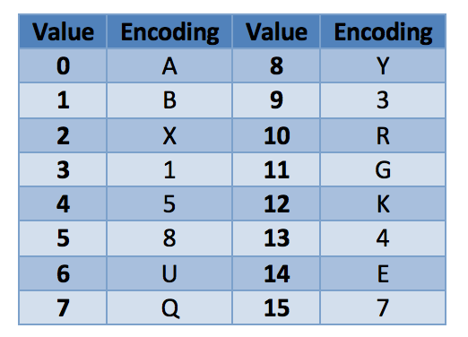

Problem made by Lockheed Martin, is CodeQuest 2013 Problem 13
This problem has a difficulty of 50
Two friends have been using instant messenger and have also been watching too many spy movies. They are afraid that people will be able to listen in on their conversation, so they use steganography to hide what they are talking about. The friends send each other YouTube links that follow this pattern:
https://www.youtube.com/watch?v=UYU8Q3
This looks like any normal YouTube link to the untrained eye, but the text after the “v=” is actually an encoded message. Your job is to write a program that will decode a conversation encoded using these YouTube links. The encoding is done using the following table:

Every character in normal text is split into two encoded characters as follows:
1. Find the ASCII value of the character (for example, the letter h has an ASCII value of 104, or 01101000).
2. Use the integer value of the first 4 bits to get the first encoded character (for h, the first 4 bits are 0110, or 6, which maps to U from the table).
3. Do the same for the second 4 bits (for h, the second 4 bits are 1000, or 8, which maps to Y from the table).
4. Put these encoded characters together and repeat the process for each character in the string you are encoding (so h would map to UY).
Your program should reverse this process to find the actual text from the encoded link parameters.
The file Prob13.in.txt will contain a conversation between two or more people using the fake links containing the encodings. Their conversation will only use alphanumeric characters, and special characters such as ‘=’ will not be used in the conversation.
Alice: https://www.youtube.com/watch?v=UYU8Q3
Bob: https://www.youtube.com/watch?v=QQUYUBQ5XAU3Q1XAU3Q5
Alice: https://www.youtube.com/watch?v=U1UBUEXAQQU8XAU4U8U8Q5
Bob: https://www.youtube.com/watch?v=5E57
Bob: https://www.youtube.com/watch?v=53XAU5U7UEQ5XAUGUEU7QQXAQ3U7Q8
Your program’s output should display the conversation in the same format as the input but with the decoded values instead of the links.
Alice: hey
Bob: what is it
Alice: can we meet
Bob: NO
Bob: I dont know you